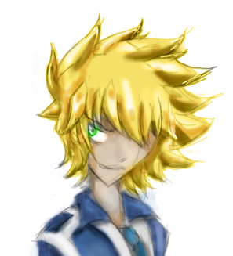

Leevi Kukkonen: Harrastukset
Taide ja Liikunta:
Kuvataiteen tutkintosarjakuva Theseus (2016) on suurin nykyinen kuvataiteen saavutukseni.
Thesus on 30-sivuinen mustavalkoinen sarjakuva, joka on tehty alusta loppuun itse. Piirrustusaikaa annettiin koko vuoden ajaksi.
Opiskelin Jyväskylän kuvataidekoulussa kerran viikossa toimivassa ryhmässä vuosina 2010 - 2016 ja toimin siellä yhteensä kuusi vuotta. Opiskelujen aikana kerrytin kokemustani kuvataiteen, animaation, muotoilun ja kuvankäsittelyn saralla. Sain käytetystä ajastani osallistumistodistuksen, koska päättötodistuksen saamisesta uupui yhden vuoden verran.
Muuten piirrustustaide ja maalaaminen on yksi intohimoistani vapaa-ajalla ja olen paraaikaa kirjoittamassa kokonaista omaa sarjakuvaprojektiani. Kuulun myos Keski-suomen sarjakuvaseura KESSiin ja anime- ja mangaseura Tsukiaihin. Kumpikin kokoontuu säännöllisesti kerran viikossa.
Taiteellisten kiinnostuksenkohteiden lisaksi arkeeni kuuluu melko paljon liikuntaa, joka koosuu suurimmalta osin koulumatkoista ja muusta vapaa-ajan matkoista.
Monet tuntevat minut enemman tanssijana ja onhan minulla kokemusta jo viiden eri tanssilajin saralta. Olen esiintynyt ainakin kerran vuodessa tanssin parissa aina 9-vuotiaasta asti niin kansantanssin, Streetdancen, Showtanssin ja Breakdance-tanssilajien saralta. Nykyisin olen ISOn tanhuajien aktiviinen kannattaja. Kuljen kansantanssitunneilla Lutakon tanssisalilla viikoittain.
Musiikki

Musiikillisesti minulla on kokemusta instrumentin soittamisesta. Toimin pääasiassa klarinetin soittajana vuosina 2006-2016 kunnes yritin taidoillani armeijan soittokuntaan. Tämän jälkeen olen yrittänyt pitää harrastusta yllä jatkuvalla harjoittelulla. Kymmenvuotisella kokemuksella kykenen soittamaan jo varsin haastavan kappaleen suhteellisen pienellä harjoittelulla. Virallisia suorituksena olen suorittanut musiikin 1. teoriatutkinnon ja soittanut noin kaksi virallista konserttia joka vuosi. Kokemukseni mukaan matkaa on vielä ammattilaismuusikon taitoihin.
Muutama vuosi takaperin toimin musiikillisesti ennemmin laulun saralla tenori-/bassolaulajana Schildtin lukion kuorossa, jossa esiinnyimme kahdesti vuodessa. Musiikinlehtori opetti meille laulukursseilla laulamisen perusteet jotka toimivat yleisesti kaiken musiikkikasvatuksen tukena. Innostuinkin laulamisesta siihen malliin, jotta osallistuin setlementtiliikkeen teatteripajaan, jossa esitettiin oopperaesitys setlementtiliikkeen historiasta ja sen uudistamisesta. Nykyisin tämäkin harraste on vähentynyt muun tekemisen tieltä.